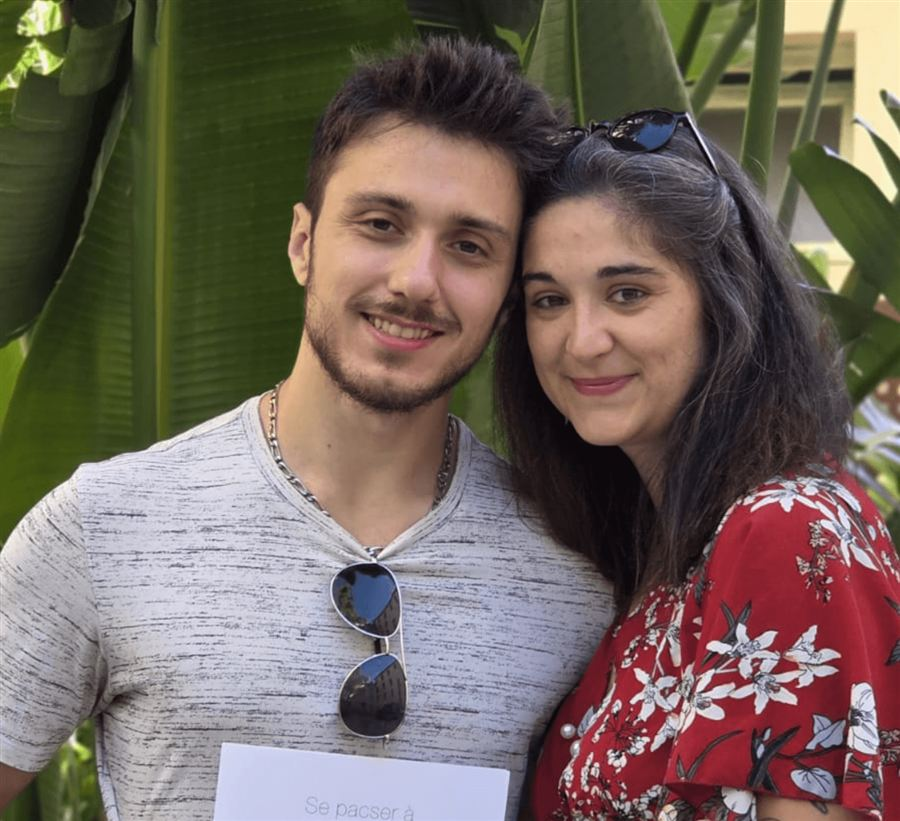
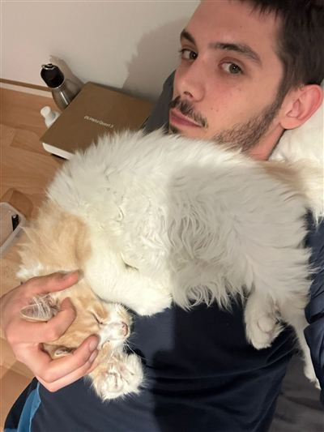
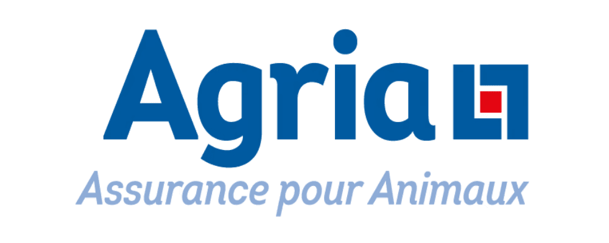
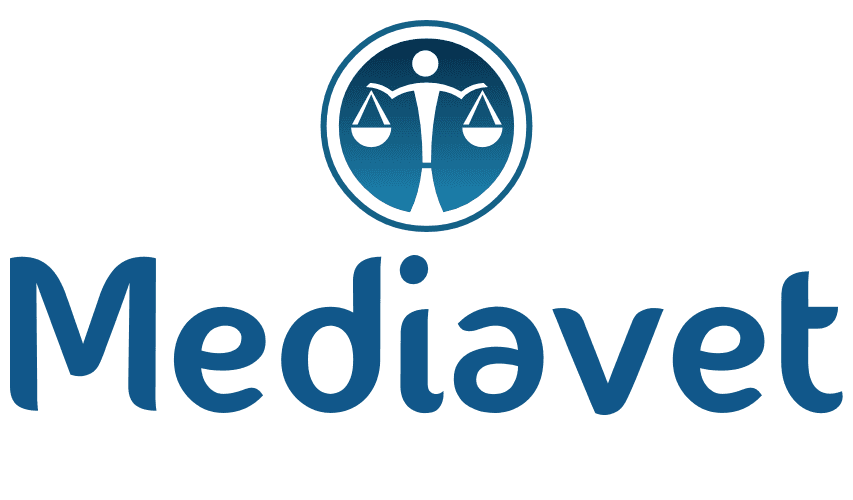

Fondée en 2024 à Le Soler, près de Perpignan. Une lignée noble, élevée avec passion, rigueur et tendresse, dans le respect du chat.
Fondée en 2024 par passion, Epic Claws est une chatterie dédiée au bien-être, à la santé et à l'excellence de la race Maine Coon. Inspirée d'un univers médiéval, notre élevage allie élégance, rigueur et respect du chat.
Situé à Le Soler, à côté de Perpignan, nos Maine Coons sont élevés en milieu familial, entourés d'attention, de câlins et d'interactions quotidiennes, afin de devenir des compagnons équilibrés, affectueux et bien socialisés.

Nous sommes Marion et Andy, fondateurs de la Chatterie Epic Claws. Notre passion pour les animaux nous a naturellement conduits à créer un élevage de Maine Coon éthique et familial.
Nos chatons grandissent entourés de notre tribu, habitués aux bruits du quotidien et aux interactions humaines, afin de rejoindre leur famille bien dans leurs pattes et dans leur tête.
Faire connaissanceMerci à toutes les familles qui ont adopté l'un de nos petits cœurs.
« Ce couple qui se passionne pour la race du Maine Coon promet de jolies portées de bébés. Sérieux, ils promettent tous les deux une belle évolution. N'hésitez pas ! »
« Nouvelle chatterie de Maine Coon à Perpignan. Les femelles et leurs petits sont soignés avec un grand sérieux, dans un environnement leur permettant de bien grandir avant de rejoindre leurs futurs maîtres. »
« J'ai adopté le petit Perceval suite à un désistement. Tout s'est très bien passé avec Epic Claws : communication fluide, sérieux et bienveillance. Il s'épanouit chaque jour. »




Une FAQ conçue pour vous fournir les informations dont vous avez besoin.
Oui, les visites se font uniquement sur rendez-vous. Cela nous permet de vous accorder toute notre attention et de limiter les perturbations pour nos chats et chatons. N'hésitez pas à nous contacter pour organiser une visite à un moment qui vous convient.
Nos chatons grandissent dans un environnement familial chaleureux et stimulant. Comme vous pouvez le voir sur nos photos, ils sont élevés avec leur mère dans des espaces adaptés et confortables. Nous accordons une attention particulière à leur socialisation dès leur plus jeune âge pour qu'ils deviennent des compagnons équilibrés et affectueux.
À la chatterie Epic Claws, nous mettons tout en œuvre pour que chaque chaton parte dans les meilleures conditions. Lors de son départ, votre chaton sera :
Ces garanties permettent d'assurer la santé, la traçabilité et l'origine de votre chaton.
Le processus d'adoption commence par une prise de contact pour manifester votre intérêt. Nous organisons ensuite une visite pour que vous puissiez rencontrer les chatons disponibles. Si vous trouvez votre compagnon idéal, nous finalisons l'adoption avec un contrat et des conseils personnalisés pour les premiers jours. Nous restons disponibles après l'adoption pour répondre à vos questions.
Nos chatons sont disponibles pour l'adoption entre 8 à 12 semaines. Cela leur permet de rester suffisamment longtemps avec leur mère pour être correctement socialisés, sevrés et avoir reçu leurs premiers soins vétérinaires essentiels.
Afin de faciliter l'arrivée de votre chaton dans sa nouvelle famille, nous fournissons également un kit de départ comprenant :
Ces éléments permettent à votre chaton de s'adapter plus facilement à son nouvel environnement.
Une question, un coup de cœur pour un chaton, ou un projet de saillie : nous serons ravis d'échanger avec vous.
Nous contacter